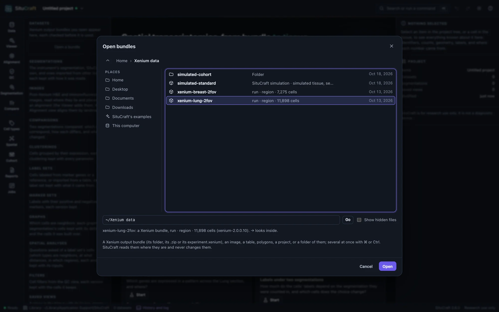
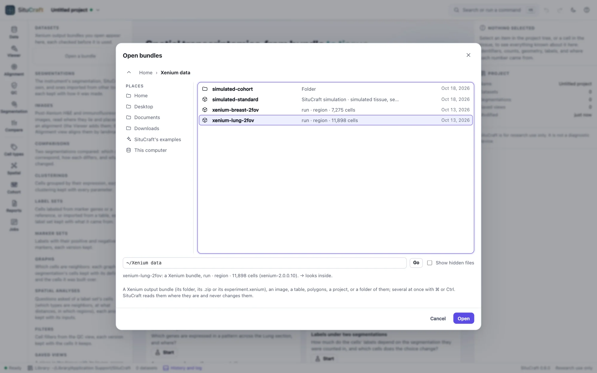
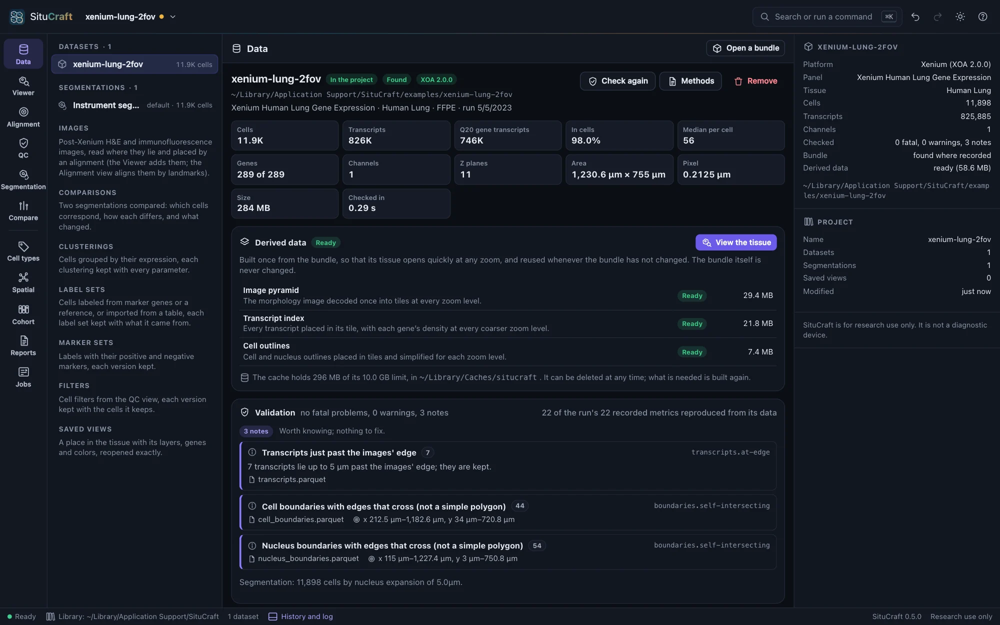
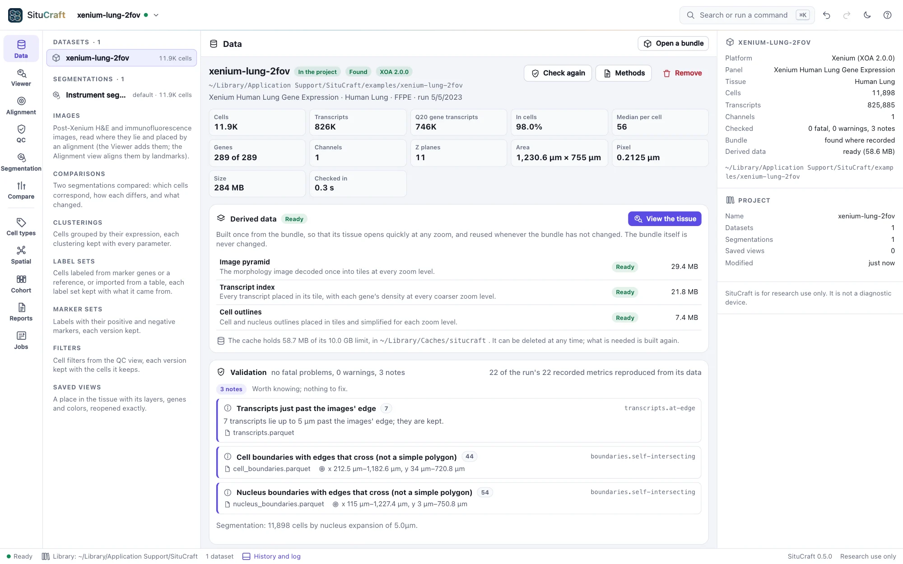

Opening a bundle
SituCraft opens a Xenium output bundle where it lies, never changing it, and checks it before anything else: what it is, how far SituCraft supports it, and what is wrong with it, with what to do.
Open your own bundle
A Xenium output bundle is the folder the instrument or Xenium Ranger wrote, holding experiment.xenium, transcripts.parquet, cells.parquet, the boundaries, the cell-feature matrix and the morphology images. SituCraft opens it as:
- its folder, its
experiment.xeniumfile, or a.zipof it; - on the command line,
situcraft /path/to/output-XETG00000__0000000__Region_1__20240101__000000(several bundles, or a folder of them, at once); - or Open a bundle in the window (⌘O or Ctrl+O), choosing it on this computer.
SituCraft reads a bundle where it is, and never changes, moves or copies it. Running situcraft <paths> while SituCraft is open hands them to the open window.
Open a bundle shows this computer's folders. Start from a place on the left: your home folder, its Desktop, Documents and Downloads, SituCraft's examples, the computer's disks, or a folder you used lately. Then go into folders by double-clicking them, or go back up by the crumbs at the top. Each Xenium bundle is marked, with its run, region and cells, and what SituCraft cannot open is grayed. Double-click a bundle to open it, or choose several with ⌘ or Ctrl and press Open. A folder that holds bundles opens all of them. You can also type or paste a path, then press Enter.
From the keyboard, the arrows move through the folder, → goes into the folder chosen (a bundle too, to choose one of its files) and ← goes up, typing a name's first letters finds it, and Enter opens. The dialog opens where it was last used. A browser never tells a page where a file is on the computer, so the program lists the folders, and only for this computer: another computer reaching SituCraft can neither list folders nor open files. The fields that name a file elsewhere (a reference, a table of labels, an imported segmentation, a post-Xenium image, an export's folder) have the same dialog behind their Browse… buttons.


Check it: the Data view


The Data view says what the bundle is (instrument software and version, panel, tissue, cells, transcripts, channels) and how far SituCraft supports it: Xenium Onboard Analysis 2.x fully, other versions best-effort, said so.
It then checks the bundle. Each finding is:
- fatal: the bundle cannot be used until it is fixed (a missing or unreadable file);
- a warning: usable, but it may bias an analysis;
- a note: worth knowing, nothing to fix.
Each finding names its files, how many records it concerns, where in the tissue, and what to do. SituCraft also recomputes 20 of the run's recorded metrics and 2 values of its manifest from the data and says whether they agree.
Add it to the project
Add to project records a bundle with no fatal finding in the current project. SituCraft then builds its derived data once (image tiles at every zoom, a spatial index of the transcripts, tiled cell outlines): a few seconds for the examples, shown with its progress. They are kept in the cache and reused whenever the bundle is unchanged; they can be deleted at any time and are rebuilt when needed. View the tissue opens the Viewer.